| 评审维度 | 权重 | 本方案对应章节 |
|---|---|---|
| D1 场景价值与行业可复制性 | 25% | §1 场景与价值（行业/部门/岗位模板，274 个职能 Agent） |
| D2 多 Agent 协同与自主闭环能力 | 25% | §2 方案设计（三层编排 + AgentTeams 映射 + 医疗云实跑） |
| D3 Skill 工程体系与生态复用 | 25% | §3 Skill 全生命周期 + 自动进化闭环（核心创新） |
| D4 工程落地、运行验证与安全可审计 | 20% | §4 工具/MCP/RAG/可观测 + 审批回滚审计 + 评测报告 |
| D5 开放/开源贡献 | 5% | §5 开源计划、合规披露与落地路线 |
独立开发者、咨询/投研从业者、中小企业主、内容创作者——没有预算雇佣完整团队，但任务需要多种专业能力协同。
「行业 → 部门 → 岗位」三级组织模板：内置金融（6 部门 / 30+ 岗位 / 8 团队）、自媒体、软件开发三大行业；同一套编排引擎 + Skill 体系可复制到医疗、电商、政务等任何知识密集型行业。
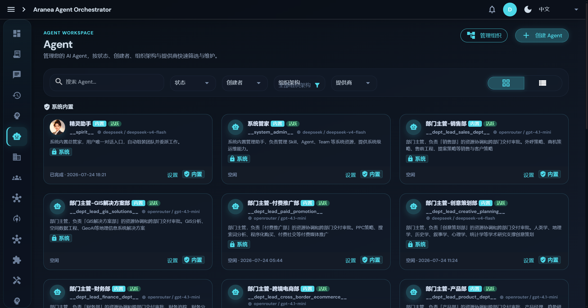
Kratos v2：HTTP / gRPC / WebSocket
trpc-agent-go：Runner / Agent / Session / Skill / Graph / Team
SQLite（Ent ORM，WAL 读写分离）+ PostgreSQL/pgvector（可选向量）
把"请先规划再动手"写进系统提示词 = 把交通规则写在纸条上递给司机。建议 ≠ 约束。AI 觉得任务简单就跳过规划，写完就说"完成了"没跑测试。我们在路上装红绿灯——把流程写在引擎的确定性逻辑里，而不是提示词里。
| 原则 | 实践 |
|---|---|
| 硬驱动 | 流程推进由代码逻辑做出，不由 AI 决定。AI 输出的"完成了"只是屏幕上的一行字，不参与推进判定——AI 没有能力跳过任何一个阶段 |
| 声明式可插拔 | 工作流即配置包。Team 六模式 / Graph 图编排 / Spirit 动态编排——换一套流程就是换一套配置，引擎不变 |
| 正交矩阵 | 「执行者 × 门控」两个维度组合出全部工作流场景：self/delegate × auto/user/conditional |
| 零侵入 | 流程引擎挂载在执行内核之上，随时可拆退回裸循环；引擎 bug 不污染核心循环 |
| AgentTeams 要素 | 本平台实现 | 实证证据 |
|---|---|---|
| 角色编排 | Orchestrator / Worker / Synthesizer 角色 + coordinator 协调模式，团队成员按职能分工 | ts2-03 团队组建截图；team-run definitionSnapshot 拓扑 |
| 任务拆解 | plan_and_execute：任务规划 → todo 计划 → DAG 步骤（环检测 + 拓扑排序） | ts2-02/03；DAG 约 5 步 |
| 上下文传递 | Graph StateFields 团队共享黑板 + set/get_deliverable 产物引用 + 五层记忆 | ts2-04；历史 run inputPreview 含「上游交付物」 |
| 协同执行 | 成员并行执行 + 流式活动树（thinking / action / reply）+ 失败自动降级回退 | ts2-04 并行执行截图 |
| 状态追踪 | 会话参与者 / 运行记录 / TeamRun 状态机 / 活动树实时状态 | ts2-05；participants / runs JSON |
失败策略 Skip / RetryThenBlock / FailFast + 熔断器；人工确认介入点（审批守卫）插入编排流程；Web 搜索不可达时自动降级内部知识路径（实跑验证）。
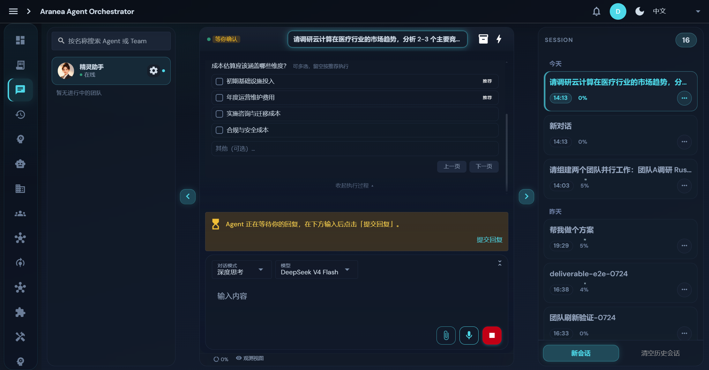
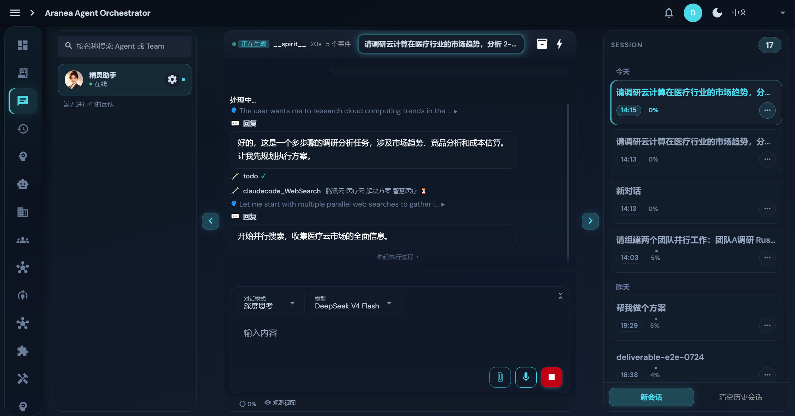
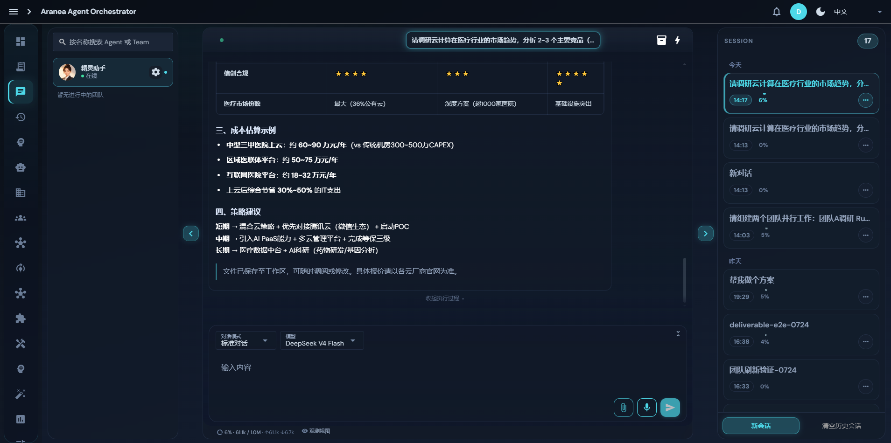
| Name | Role | Capabilities | Decision Boundary | Trace |
|---|---|---|---|---|
| 精灵助手 Spirit | Orchestrator | 任务理解/拆解/组队/合成；不做专业执行 | 自主拆解与分派；成本/合规等关键维度须人工确认 | 编排事件 + 检查点全程落库 |
| claudecode | WebSearch Worker | Web 检索/页面抓取/证据收集；不可写外部系统 | 只读操作全自动；失败自动降级内部知识 | 工具调用审计 + runs 记录 |
| deepresearch | MarketResearch Worker | 竞品调研/行业分析/结构化报告；不做财务承诺 | 分析自主；结论需附证据等级 | 活动树 thinking/action/reply |
| finance | CostEstimation Worker | 成本建模/估算/敏感性分析；不执行真实采购 | 估算自主；对外报价类输出须人工审批 | Token 用量 + 成本事件 |
审批编排关键维度人工确认（图 ts2-02）；Skill 进化 pending→approved 人工审批状态机 回滚Skill 版本回滚 + 文件系统恢复；记忆 Saga 级联更新失败自动补偿 审计工具审计（ts6-03）+ 管理操作审计日志 + 全链路 Trace
注册拒绝路径穿越（..//\）；合并失败自动回滚 DB + 磁盘；所有进化必须人工审批。
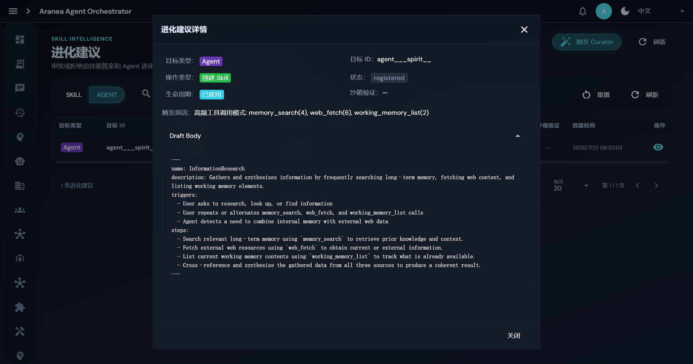
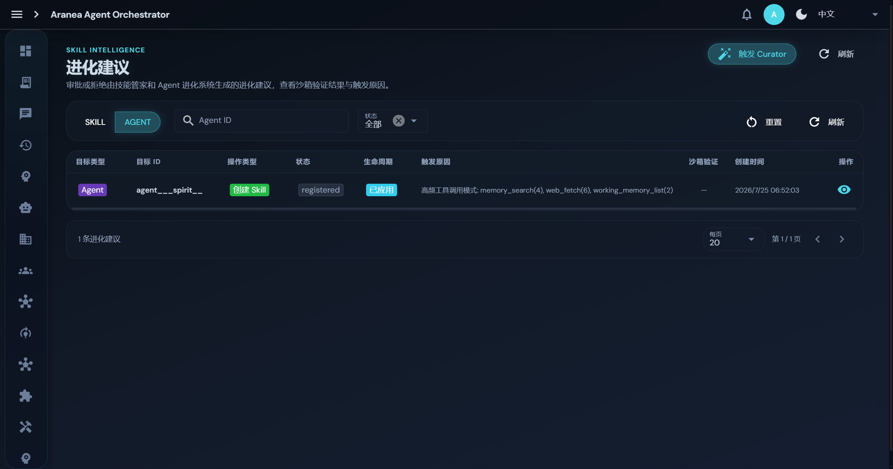
InformationResearch：交替检索长期记忆（memory_search ×4）、抓取 Web 内容（web_fetch ×6）、盘点工作记忆（working_memory_list ×2），交叉综合产出研究结果。3 条触发条件 + 4 步执行步骤，全部由 LLM 从真实调用模式中归纳。
| Skill 名称 | 类型 | 用途与调用条件 | 依赖工具 | 失败处理 / 安全边界 |
|---|---|---|---|---|
| InformationResearch | 自动进化生成 | 内外信息交叉调研；研究类请求或交替调用模式触发 | memory_search / web_fetch / working_memory_list | 单源失败降级其余源；只读无副作用 |
| planning-and-task-breakdown | 自定义 | 规格拆解为可实现任务；任务过大或需估算时触发（5113 次调用，成功率 100%） | 任务 DAG 持久化 | 拆解失败回退单步执行；不写外部系统 |
| idea-refine | 自定义 | 想法结构化打磨（发散-收敛）；“ideate”触发（5116 次调用，成功率 100%） | LLM 推理 | LLM 不可用回退启发式模板 |
Skill 与 Agent 解耦：同一 Skill 可被多个 Agent / 多个行业场景复用；版本管理 + 审批发布 + 渐进加载，具备开源分发条件；自动进化机制让 Skill 清单随使用持续增长。
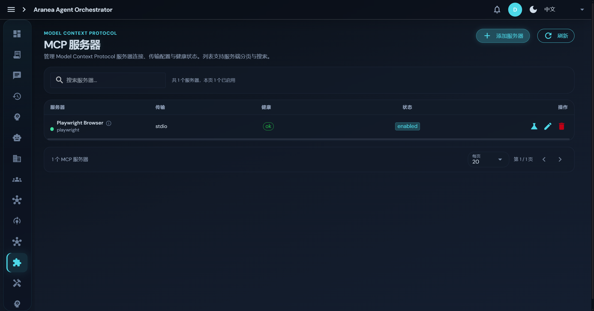
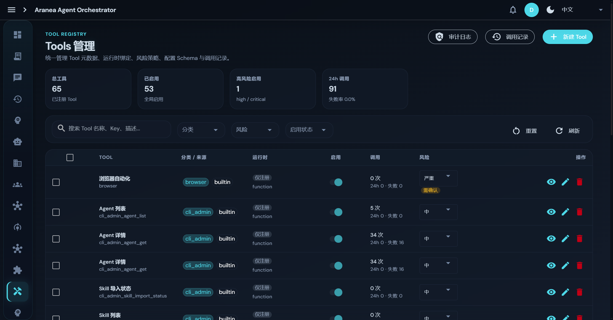
统一工具注册表：名称 / 参数 Schema / 返回结构 / 权限范围（permission_guard deny_list）/ 失败重试 / 幂等 / 审计日志 / 降级策略——迁移到 MCP 仅需协议适配，无需重设计调用链。
| 层级 | 名称 | 功能 |
|---|---|---|
| L0 | 会话上下文窗口 | 最近 N 轮对话 + 摘要压缩注入 |
| L1 | 工作记忆 | 结构化字段（角色/偏好/约束），Token 预算控制 |
| L2 | 情景记忆 | 对话片段向量索引 + 时间衰减召回 |
| L3 | 语义事实 | 五维评分召回，跨 agent/user/team/workspace/global 五 scope 融合 |
| L4 | 知识图谱 | 实体-关系图谱，Saga 级联更新（失败自动补偿回滚） |
Graph StateFields 共享黑板（blackboard/<topic> 命名空间）+ set/get_deliverable 产物引用 + 认知信封（decisions/assumptions/open_questions），并发下一致性由状态 Reducer（append/cover/merge）保证。
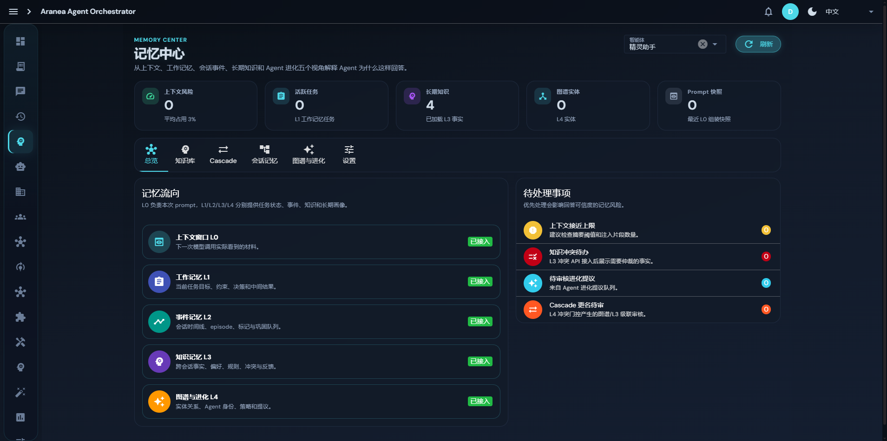
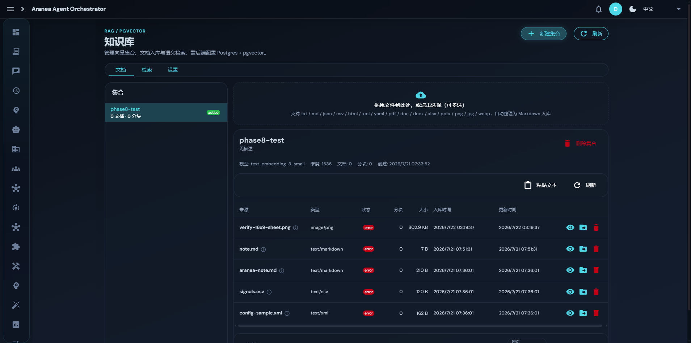
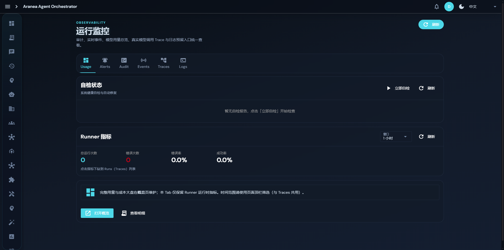
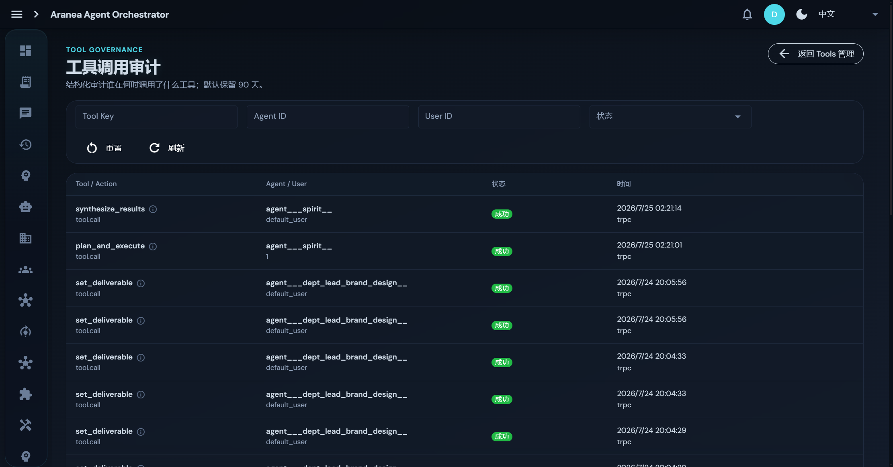
| 测试场景 | 验证内容 | 对应要求 | 状态 |
|---|---|---|---|
| TS-1 Agent 资产 | 274 Agent 清单 / 详情 / 工具授权 | H1 · D2 | ✔ 通过 |
| TS-2 协同闭环（核心） | 医疗云调研：拆解→组队→审批→并行→降级→合成 | H1+H2 · D2 | ✔ 通过 |
| TS-3 Skill 系统 | 列表 / 详情 / 版本 / 渐进加载 | H3 · D3 | ✔ 通过 |
| TS-4 Skill 自动进化（核心） | 检测→去重→LLM 生成→审批→注册全链路 | H3 · D3 | ✔ 通过 |
| TS-5 MCP 集成 | Server CRUD / 连通性 / 健康 / 工具发现 | R1 · D4 | ✔ 通过 |
| TS-6 工具系统 | 65 内置工具 / runs / audits | R1 · D4 | ✔ 通过 |
| TS-7 上下文与 RAG | 五层记忆 / 知识库 / 共享黑板 | R3 · D2 | ✔ 通过 |
| TS-8 可观测与审计 | Trace / 日志 / Metrics / 审批 / 审计 | H4+R2 · D4 | ✔ 通过 |
Kratos v2（Apache-2.0）、Ent ORM（Apache-2.0）、Vue 3/Quasar（MIT）、SQLite、models.dev（模型目录数据源）、Playwright MCP——关键版本锁定于 go.mod / package.json，随代码包披露。
演示任务为公开行业信息调研与模拟数据，无企业私有数据；知识库文档由用户自主上传并隔离于自有实例；PII 审查面板支持人工标记审核。
代码包含运行入口 / 依赖说明 / 配置文件 / 样例输入输出；本地一键初始化（make all）+ 免登录开发模式；证据包含实跑会话 ID 与 API 记录可复核。